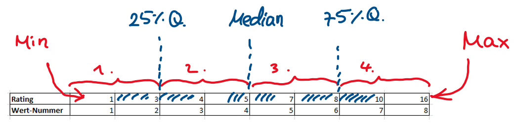

Sitzung 3: Deskriptive Datenanalyse und Grafiken
1 Umfragen vs. Experimente
In der letzten Sitzung haben wir uns mit der Aufbereitung erhobener Daten befasst. Nachdem Sie also nun wissen, wie man erhobene Daten so aufbereitet, dass man damit weiterarbeiten kann, sollten Sie nun auch erfahren, was dieses “Weiterarbeiten” umfasst. Ein erster Schritt, um den es heute geht, ist quasi immer eine Beschreibung der Daten durch die Ermittlung bestimmter statistischer Kennwerte. Wir befassen uns in dieser Sitzung also mit deskriptiver Statistik.
In der letzten Sitzung haben wir Daten verwendet, die aus Umfragen/ Fragebögen stammten. In dieser Sitzung wollen wir das Thema “deskriptive Statistik” zur Abwechslung dagegen mit den Daten aus einem psychologischen Experiment besprechen.
Hoffentlich haben Sie in der letzten Sitzung schon darüber nachgedacht und/ oder nachgelesen, was Umfragen von Experimenten unterscheidet. Im Kasten unten ist der Unterschied noch einmal kurz auf den Punkt gebracht.

Umfragen sind einfach Messungen von etwas. (Was nicht heißen soll, dass die Erstellung und Durchführung aussagekräftiger Umfragen sehr einfach wäre.) Eine Umfrage könnte z.B. die persönliche Einstellung von Menschen zu Fragen des Umweltschutzes erfassen.
Experimente dagegen sind mehr als einfach nur “messen”. Experimente sind eine wissenschaftliche Methode, die es erlaubt, Ursache-Wirkungs-Zusammenhänge in der Welt zu erfassen. Experimente, anders als bloße Umfragen, erlauben damit die Beantwortung kausaler Fragen. Z.B. könnten sich ForscherInnen fragen, ob ein bestimmtes Medikament die Symptome einer neuartigen Krankheit verbessert und versuchen, diese Frage mittels eines Experiments zu klären. Für ein Experiment sind die folgenden Dinge entscheidend:
Manipulation (Variierung) des vermeintlichen Ursachenfaktors. Diesen Faktor nennt man auch unabhängige Variable (UV). Im einfachsten Fall stellt man eine Bedingung her, in der die UV anwesend ist (z.B. könnten ForscherInnen eine Versuchspersonengruppe rekrutieren, die das neue Medikament bekommt), und eine weitere Kontrollbedingung, in der die UV abwesend ist (z.B. eine Versuchspersonengruppe, die lediglich einen Placebo bekommt).
Kontrolle von Störvariablen. Man muss Maßnahmen ergreifen, die dafür sorgen, dass potentielle Störfaktoren die Ergebnisse nicht systematisch verfälschen. Dazu gibt es mehrere Möglichkeiten: (1) Abschalten oder (2) Konstanthalten von Störvariablen (was natürlich nur geht, wenn man diese überhaupt kennt), oder (3) Gleichverteilung der Störvariablen auf die verschiedenen Versuchsbedingungen des Experiments. Letzteres kann man auch versuchen, wenn man die Störvariablen nicht kennt und zwar durch Randomisierung (z.B. könnte man durch Münzwurf bestimmen, welche Versuchspersonen das Medikament bekommen und welche nur den Placebo).
2 Das heutige Beispiel: Wie reagieren Menschen in moralischen Dilemma-Situationen?
Eine in der Forschung zu moralischen Intuitionen viel untersuchte Frage ist, welche Handlungen Menschen in moralischen Dilemmasituationen eher für angemessen halten. Ein moralisches Dilemma ist dann gegeben, wenn man eigentlich keine der Handlungsoptionen in Ordnung findet, sich aber in der gegebenen Situation für eine der Optionen entscheiden muss. Folgende Situation illustriert ein solches (in diesem Fall völlig fiktives) moralisches Dilemma:
Stellen Sie sich vor, ein Zug ist außer Kontrolle geraten und rast die Gleise entlang. Weiter unten auf der Strecke sind gerade fünf Personen, die den nahenden Zug nicht bemerken können. Rast der Zug unkontrolliert weiter, so wird er die fünf Personen überrollen und töten. Es gibt eine Möglichkeit, das Leben der fünf Personen zu retten. Die Zugführerin könnte eine Weiche umstellen, wodurch der Zug noch rechtzeitig auf ein Nebengleis umgeleitet würde. Das Problem ist, dass auf diesem Nebengleis eine einzelne Person ist, die stattdessen auf jeden Fall sterben würde, wenn man den Zug umleiten würde.
Wie moralisch akzeptabel fänden Sie es, wenn man den Zug durch Umstellen der weiche auf das Nebengleis umleiten würde?
Es handelt sich dabei um das sogenannte Trolley-Dilemma, das von der Philosophin Philippa Foot erdacht wurde und vielleicht manchen von Ihnen bekannt ist (hier der Wikipedia-Artikel dazu). Eine Person sterben zu lassen, um fünf andere dadurch zu retten, erscheint vielen Menschen akzeptabel.
Stellen Sie sich jetzt folgende Version des Dilemmas vor (die in Reaktion auf den oben beschriebenen Fall von der Philosophin Judith Jarvis Thomson entwickelt wurde):
Ein Zug ist außer Kontrolle geraten und rast die Gleise entlang. Weiter unten auf der Strecke sind gerade fünf Personen, die den nahenden Zug nicht bemerken können. Rast der Zug unkontrolliert weiter, so wird er die fünf Personen überrollen und töten. Es gibt eine Möglichkeit, das Leben der fünf Personen zu retten. Jemand könnte eine sehr schwere Person von einer Brücke stoßen, wodurch diese auf die Gleise fallen und den Zug ganz sicher abbremsen würde, noch bevor er die fünf anderen Personen töten könnte. Das Problem ist, dass die Person, die man von der Brücke schubsen würde, auf jeden Fall sterben würde, wenn man den Zug umleitet.
Wie moralisch akzeptabel fänden Sie es, wenn man die Person von der Brücke herunter vor den Zug schubsen würde?
Im Gegensatz zu ersten Version, die auch “Bystander-” oder “Switch-” Version genannt wird, geben viele Personen in der jetzigen, der sogenannten “Footbridge-” oder “Push-” Variante des Trolley-Dilemmas, an, dass es moralisch eher nicht akzeptabel ist, die Handlung, also das Schubsen der einen Person, durchzuführen.Eine Person sterben zu lassen, um fünf andere dadurch zu retten, erscheint vielen Menschen hier plötzlich nicht akzeptabel. Die beiden Versionen des Dilemmas sind in der unteren Abbildung noch einmal illustriert.
Im Wintersemester 2019/20 wollten wir den Psychologiestudierenden des ersten Semesters demonstrieren, wie robust dieser Effekt ist und deshalb ein Experiment durchgeführt. Uns ging es dabei nicht darum, eine Erklärung des Effekts zu prüfen, sondern nur, ihn einfach erneut zu demonstrieren. Wenn Sie das Thema mehr interessiert, können Sie z.B. dieses Kaptiel hier, aus dem die Abb. oben stammt, lesen. In unserem Experiment war die Frage: “Führt das Push-Dilemma zu niedrigeren Akzeptabilitätsratings als das Switch-Dilemma?” Dazu ließen wir die Studierenden also einfach entweder die “Switch-” oder die “Push-” Version des Dilemmas lesen und beurteilen. Die Versuchspersonen wurden den beiden Bedingungen (Switch vs. Push) zufällig zugeteilt. Nachdem sie die Szenarien gelesen hatten, gaben sie auf einer sechstufigen Ratingskala an, wie moralisch akzeptabel sie die beschriebene Handlung finden (1 = völlig unangemessen; 6 = völlig angemessen). Die gemessene oder auch abhängige Variable (AV) war also dieses Akzeptabilitätsrating.
2.1 Die Daten
Die Excel-Datei mit den Ergebnissen des Experiments können Sie hier herunterladen. Die erste Arbeitsmappe sollte dann so aussehen, wie unten abgebildet.

Die verschiedenen Spalten bedeuten folgendes:
- Spalte A: “number/ sID” = Versuchspersonennummer
- Spalte B: “dilemma” = experimentelle Bedingung; also ob die Versuchsperson die “Switch-” oder “Push-” Version gesehen hatte.
- Spalte C: “answer” = das Rating der Person (AV)
In die weiteren beschrifteten Spalten/ Zellen sollen in den nächsten Schritten die Ergebnisse von Berechnungen eingetragen werden.
2.2 Wichtige deskriptive Kennwerte berechnen
In der Vorlesung haben Sie wichtige deskriptive statistische Kennwerte bereits kennengelernt, die man benutzt, um vorliegende Daten zu beschreiben, zusammenzufassen und damit letztlich besser zu verstehen. Zu diesen deskriptiven Kennwerten zählen z.B.:
- Lageparameter wie:
- Arithmetisches Mittel (oft einfach nur “Mittelwert” genannt)
- Median
- Modus
- Streuungsmaße wie:
- Standardabweichung (oft einfach “Streuung” genannt)
- Varianz
- Interquartilsabstand
- Minimum
- Maximum
Wie Sie in der Kopfzeile der Excel-Datei sehen können, sollen Sie einige dieser Werte für den vorliegenden Datensatz nun bestimmen.
2.2.1 Anzahl
Benutzen Sie zuerst die Excel-Funktion “Anzahl()” und zählen Sie damit aus, wie viele Versuchspersonen in jeder Bedingung waren. Schreiben sie die Ergebnisse in die Zellen I21 und J21.
2.2.2 Arithmetisches Mittel
Als nächstes die Berechnung der arithmetischen Mittel der beiden Versuchsgruppen. Diese Mittelwerte sollen Sie jeweils in die Zellen I14 und J14 eintragen. Überlegen Sie zuvor noch einmal, was genau gibt das arithmetische Mittel an?
Die mathematische Formel ist: \(\frac{1}{n} \sum_{i=i}^{n} x_{i}\)
Sie müssen also alle Rohwerte (Ratings jeder Versuchsperson) einer Versuchsgruppe aufsummieren und durch die Anzahl der Werte dieser Gruppe dividieren. Benutzen Sie dazu die Excel-Funktion “Summe()” und die zuvor berechneten Anzahlen (n). Hier eine Veranschaulichung für die Gruppe “Push”:

Die Berechnung, die im Bild dargestellt ist, bildet die obige mathematische Formel nach. Das Schöne an Excel ist, dass man viele statistische Kennwerte aber auch direkt über eine eigene Funktion ermitteln kann. Für das arithmetische Mittel gibt es dafür die Funktion “=MITTELWERT()”. Benutzen Sie nun diese Funktion, wie im Bild unten dargestellt, und schreiben Sie die Ergebnisse in die dafür vorgesehenen Zellen I15 und J15.

2.2.3 Standardabweichung
Als nächstes berechnen wir die Standardabweichungen der beiden Versuchsgruppen. Überlegen Sie erst noch einmal, was gibt die Standardabweichung an?
Die Formel für die deskriptive Standardabweichung ist: \(s=\sqrt{\frac{1}{n}\sum_{i=1}^n(x_i-\bar{x})^2}\)
Sie müssen also jeden Wert in einer Versuchsgruppe von deren Gruppenmittelwert abziehen und quadrieren, dann diese quadrierten Werte aufsummieren und durch die Anzahl der Werte teilen (also mitteln) und aus diesem Ergebnis dann am Ende die Wurzel ziehen.
Zwischenfrage: Was für einen Kennwert bekommt man, wenn man die Standardabweichung quadriert?
Das sollen Sie jetzt schrittweise machen. Dazu gibt es die Spalten “Abweichung Mittelwert” und “Abweichung quadriert”. Hier wieder eine Veranschaulichung:

Warum wurde die Zelle des Mittelwerts (rot) mit Dollarzeichen “fixiert”? Überlegen Sie.
In der Spalte rechts daneben berechnen Sie nun die quadrierten Werte der gerade berechneten Abweichungen. Also so:

Wenn Sie das für beide Versuchsgruppen gemacht haben, können Sie als nächstes die Ergebnisse benutzen, um die Standardabweichungen in beiden Gruppen zu berechnen. Sie müssen dazu die Werte jetzt mitteln und aus diesen Mittelwerten die Wurzel ziehen. Die Ergebnisse sollen in die Zellen I17 und J17. In Excel kann man mehrere Funktionen ineinander “verschachteln”. Das können Sie sich nun zunutze machen.

Auch diesmal haben wir mit den einzelnen Schritten die mathematische Formel quasi nachvollzogen. Das sollte nur dazu dienen, besser zu verstehen, was die Standardabweichung ist. Auch für die Standardabweichung gibt es eine eigene Excel-Funktion (genau gesagt sogar zwei, aber dazu in späteren Sitzungen mehr), diese heißt “STABW.N()”. Benutzen Sie nun diese Funktion, um die Standardabweichungen beider Gruppen direkt zu ermitteln.
2.2.4 Minimum, Maximum, Median und Quartile
Als letztes gibt es noch eine kleine Tabelle in die Minimum, 25% Quartil, Median und 75% Quartil und Maximum für die beiden Versuchsgruppen eingetragen werden sollen. Was Minimum und Maximum ist, dürfte Ihnen natürlich schon klar sein. Aber was ist der Median? Und was sind das 25% und das 75% Quartil? Schauen Sie sich dazu den Zahlenstrahl unten an, bei dem eine Reihe von 8 Werten aufsteigend von links nach rechts sortiert ist.


Zwischenfrage: Wie könnte man das 50%-Quartil noch nennen?
Für die Berechnung der Kennwerte Minimum, Maximum, Median, und die verschiedenen Quartile gibt es eigene Excel-Funktionen. Für die Quartile gibt es die Funktionen “QUARTILE.EXKL()” und “QUARTILE.INKL()”. Wir benutzen dieses Mal die erste der beiden Funktionen. Recherchieren Sie aber ruhig einmal im Internet, was der Unterschied zwischen beiden Funktionen ist. Hier wieder ein Bild für die Berechnung des 25% Quartils:

Versuchen Sie, die restlichen Kennwerte eigenständig zu ermitteln.
2.3 Abbildungen
Als nächstes sollen Sie verschiedene Abbildungen erstellen und zwar:
- Eine Abbildung der Gruppenmittelwerte in Form eines Säulendiagramms.
- Histogramme für die beiden Gruppen.
- Box-Plots für beide Gruppen.
Wie diese Abbildungen am Ende aussehen sollen, sehen sie in den folgenden Abbildungen. Wie man diese Abbildungen in Excel erstellt, zeigen wir Ihnen wieder in kurzen Videos.
2.3.1 Säulendiagramm mit Gruppenmittelwerten

2.3.2 Histogramme für beide Gruppen

2.3.3 Boxplots für beide Gruppen

3 Zusatzaufgabe zum weiteren Üben
Wir haben noch einen zusätzlichen Datensatz aus einem völlig anderen Szenario für Sie, mit dem Sie noch einmal alles üben können. Den Datensatz finden Sie hier. Das Szenario wird weiter unten beschrieben.
Außerdem haben wir auch die Daten des Trolley-Experiments aus dem WiSe 20/21, an dem Sie selbst teilgenommen hatten. Diese Daten finden Sie hier. Schauen Sie sich an, wie gut die Daten aus dem WiSe 20/21 zu den im letzten Jahr erhobenen passen.
Zusätzlich gibt es hier eine weitere Arbeitsmappe mit den von Ihnen erhobenen Trolley-Daten. Dort können Sie prüfen, ob die Reihenfolge, in der die Szenarien im Experiment präsentiert wurden, einen Einfluss auf die moralischen Urteile hatte. (Die Aufgabe ist zum weiteren Üben bei Bedarf/Interesse gedacht, Sie müssen sie natürlich nicht bearbeiten).
3.1 Szenario
Die Excel-Datei enthält die Daten eines fiktiven Experiments, das BiologInnen durchgeführt haben. Die Forscher*innen gingen der Frage nach, wie sich verschiedene Nahrungsgewohnheiten von Eichhörnchen auf deren körperliche Fitness auswirken. Konkret: Unterscheidet sich die körperliche Fitness von Eichhörnchen, die Walnüsse fressen, von der Fitness von Eichhörnchen, die Haselnüsse fressen?
Um diese spannende Frage zu beantworten, haben die Forscher*innen ein Experiment durchgeführt. Sie fingen dazu 80 wilde Eichhörnchen (Sciurus vulgaris) aus dem nahegelegenen Wald und teilten die Eichhörnchen zufällig in zwei Gruppen auf. Eine Gruppe (n = 40 Eichhörnchen) wurde fortan für die Dauer von 10 Wochen nur noch mit Walnüssen gefüttert. Die andere Gruppe wurde für die Dauer von 10 Wochen nur noch mit Haselnüssen gefüttert. Nach Ablauf der 10 Wochen wurde die körperliche Fitness der Eichhörnchen in den beiden Gruppen ermittelt. Dazu wurde die Ausdauer aller Eichhörnchen auf einer Skala von 0 (“weniger Ausdauer geht kaum”) bis 10 (“mehr Ausdauer geht kaum”) erfasst (wir nehmen an, dass die Ausdauer somit auf Intervallskalenniveau erfasst wurde). Die Personen, die die Bewertung der Ausdauer vornahmen, waren natürlich “verblindet”, das heißt, sie wussten nicht, ob sie Eichhörnchen der Wal- oder der Haselnussbedingung bewerteten (überlegen Sie: warum ist das von Vorteil?).
Lösen Sie die in der Excel-Datei aufgeführten Aufgaben.
4 Fragen zur Selbstkontrolle
Copyright © 2020 Simon Stephan. All rights reserved.